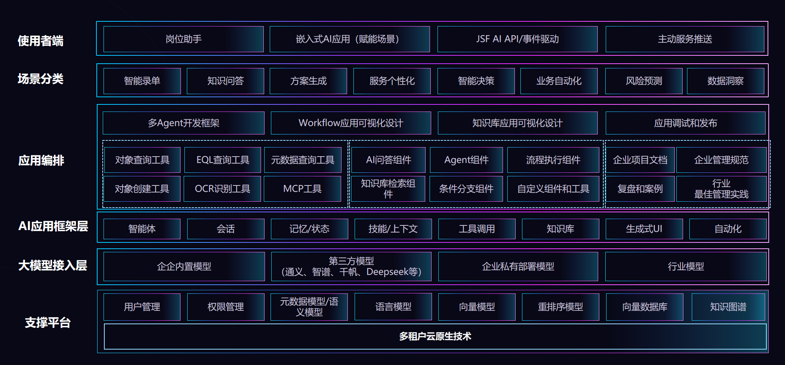

AI 到底怎么看
判断标准从演示效果转向真实业务现场，明确企企 AI 当前进入业务过程的阶段。

先建立判断，再看底座与能力，最后用客户案例和路线图确认推进边界。
企业软件的 AI，不能只看演示效果，要看它是否进入客户、权限、数据、责任和复核所在的业务过程。
围绕录入、审核、分析、执行等真实动作发挥作用，而不是多一个聊天入口
嵌入行业 know-how、流程上下文、数据权限和反馈闭环
做对可追溯，出错能停，经验能沉淀回组织流程
判断标准从演示效果转向真实业务现场，明确企企 AI 当前进入业务过程的阶段。
把 ERP 内客户面、实施面能力讲成可试、可交付、可解释的解决方案全景。
用兆慧和某新药开发头部客户呈现：真实需求如何进入方案承接链路。
区分已发布、在研和规划，预留总部 FDE 支撑机制，不提前写死资源承诺。
能力已进入真实客户需求，但仍按已发布、在研、规划分阶段审慎推进。
进入项目、合同、单据、报表、流程等真实业务过程，不额外制造工作方式
基于经营数据、业务语义和流程动作，为录入、审核、分析、执行提供持续支撑
AI 在现有业务过程中自然发生，而非独立对话窗口
阶段一
人主动提问 · 主要在聊天框中回答问题
阶段二
人在业务动作中触发 · 进入录入、审核、分析
阶段三
规则/数据/流程共同触发 · 后台辅助判断与处理
AI 不只是被提问触发，而是伴生在业务执行过程中，帮助 ERP 业务过程具备理解、判断和辅助执行能力

岗位与权限
对象 · 流程 · 数据
Agent · RAG · 工具
读写 · 流程 · 服务
横切能力：读（对象/EQL/元数据）· 写（创建/更新）· 动作（流程/服务/MCP）· 权限继承 ERP
AI 必须落到业务对象、流程动作和经营结果上
客户面 · 业务人员
项目经理 · 财务 · 运营 · 现场管理
外部文档进入系统 · 提交前预审 · 项目经营分析
实施面 · 实施与二开
实施顾问 · 客户 IT · 二开
加速个性化规则与配置落地 · 实施类免费
AI 录单 · 表单助手 · 外部文档进入 ERP
AI 预审 · 知识库 · NL 规则训练（演进）
AI 洞察 · 项目助手 · 报表二次洞察 · Skill 拓展
录入
| 能力 | 典型场景 |
|---|---|
| AI 录单 | 合同等外部格式文档进入 ERP |
| 表单助手 | 复杂表单、明细行对话录入 |
| 自然化录入 | 降低外部资料进入系统成本（演进） |
审核
| 能力 | 典型场景 |
|---|---|
| AI 预审 | 范本比对、字段一致性、用章/应付附件 |
| NL 规则训练 | 业务人员对话框训练预审规则 |
| 知识库 | 制度/规范支撑审核依据 |
项目助手是岗位助手系列起点 · 从项目工作台进入，不是泛聊
收入、成本计划、采购、深化、开票等综合分析
基于报表结果的追问分析 · 报表工具栏入口
行业口径、健康度指标 · 兆慧项目健康度初版
前端脚本
后端脚本
个性化规则 → 脚本生成 → 配置生效
客户主动梳理 8 项 AI 主题，项目健康度 / 经营分析已形成初版，预审与报价继续推进。
2026-06-17 两场需求澄清会已明确安全、质量 AI 方向，当前处于方案规划中。
基于《项目收支分析》构建健康度指标与经营分析初版。
合同范本比对、字段一致性、用章 / 应付附件校验。
集采清单每份人工核对约 3 小时以上，验证全文检索、知识库和业务规则。
不把所有需求都上屏承诺，保留边界与优先级。
来源：兆智 AI 场景评估（2026-06-23） · 聚焦项目经营、预审、报价三条主线
基于项目收支分析形成可分析底表
沉淀业务核心语义与健康度指标
提供给客户交流验证，持续推动反馈迭代
客户个性化 AI 需求已经从需求澄清推进到初步交付，而不是停在概念沟通。
交底材料耗时长，工序覆盖不足，PIMS 安全周报与 EHS 管理要求匹配度低。
识别动火、登高等作业类型，自动推送安全教育资料、Checklist 和注意事项，形成线上交底闭环。
静态安全规范 + 动态历史案例知识库待共建，目标 2026 年 10 月底试运行。
资料体量大、质量要求混杂，人力难以逐工序梳理并持续复核。
以石刚项目为试点，用施工单位周报驱动质量规范匹配，输出质量交底报告。
静态质量要求与 PIMS 动态质量数据待整理，目标 2026 年 10 月底试运行。
头部客户复杂流程中的 AI 需求已经进入方案承接，实施面脚本能力也已在项目期产生交付价值。
项目助手是系列起点 · 扩展到财务、出纳、数据分析等岗位助手
客户自有 AI / 外部 Agent 安全调用企企能力
降低外部资料进入 ERP 成本 · AI 预审规则训练演进
横切不变：ERP 真实数据读写与业务动作
FDE 机制 · 总部支撑（待决策）
具体联系人、资源规模、响应机制和承诺边界仍待决策；本次只预留机制位置，不提前承诺交付资源。
能力已进入真实场景，客户需求正在被承接，下一步要把支撑机制定清楚。